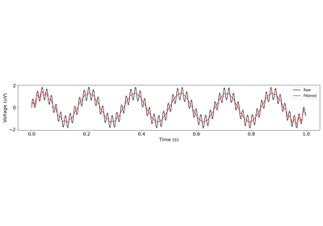

neurodsp.filt.design_iir_filter¶
-
neurodsp.filt.design_iir_filter(fs, pass_type, f_range, butterworth_order)[source]¶ Design an IIR filter.
- Parameters
- fsfloat
Sampling rate, in Hz.
- pass_type{‘bandpass’, ‘bandstop’, ‘lowpass’, ‘highpass’}
Which kind of filter to apply:
‘bandpass’: apply a bandpass filter
‘bandstop’: apply a bandstop (notch) filter
‘lowpass’: apply a lowpass filter
‘highpass’ : apply a highpass filter
- f_rangetuple of (float, float) or float
Cutoff frequency(ies) used for filter, specified as f_lo & f_hi. For ‘bandpass’ & ‘bandstop’, must be a tuple. For ‘lowpass’ or ‘highpass’, can be a float that specifies pass frequency, or can be a tuple and is assumed to be (None, f_hi) for ‘lowpass’, and (f_lo, None) for ‘highpass’.
- butterworth_orderint
Order of the butterworth filter, if using an IIR filter. See input ‘N’ in scipy.signal.butter.
- Returns
- sos2d array
Second order series coefficients for an IIR filter. Has shape of (n_sections, 6).
Examples
Compute coefficients for a bandstop IIR filter:
>>> sos = design_iir_filter(fs=500, pass_type='bandstop', ... f_range=(55, 65), butterworth_order=7)
Examples using neurodsp.filt.design_iir_filter¶
